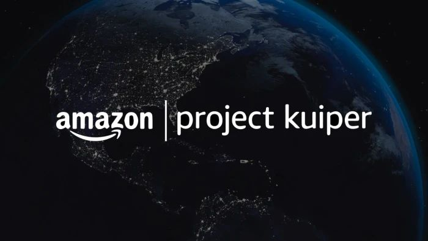

Experience
Professional and research experience spanning satellite flight dynamics operations, propulsion test stands, and autonomous spacecraft docking research.
Current Role

Amazon Leo (formerly Project Kuiper) · August 2024–Present
I support the operational safety of a satellite constellation, focused on real-time constellation health, pre-launch readiness, and time-critical flight dynamics across the mission lifecycle.
Pre-Launch Readiness
Primary ownership
Constellation Health & Safety
Real-time operational monitoring
Conjunction Assessment
Risk analysis
Orbital & Constellation Operations
Cross-Functional Coordination
Flight and propulsion teams
Research experience in propulsion testing, autonomous spacecraft docking, and related technical work is organized alongside my academic background.